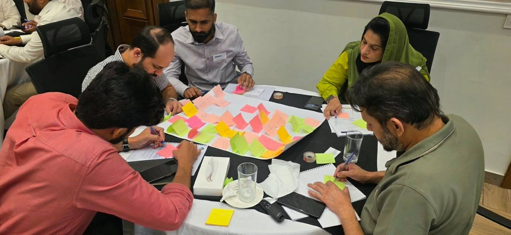
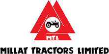
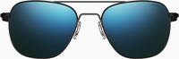

Walk away from 97%
Why we settle for mediocrity, and how to stop.
"If our potential is unlimited, why is our life so limited?"
Two days on personal leadership and effective management. Your team learns to embrace change, manage expectations, inspire others and drive results, and to stop turning stress into anxiety.







These are the patterns Sir Usman sees in almost every organisation before a workshop.
"Learning cannot be enforced. Our job is to create an environment where participants choose to learn, grow and commit to transform themselves."Usman Gulzari
Why we settle for mediocrity, and how to stop.

Change the way you look at things, and the things you look at change.
Event + Response = Outcome. We can't control the event, only our response.
Owning the result, every single time.
Do the hardest, most important task first.
Difference isn't equal to wrong.
The two ways to bring change, and why one lasts.
React vs respond: the pause that saves relationships.
Tap any module to see what's covered.

The same ideas in a one-day format for frontline professionals, built on realistic workplace situations, role-plays and simulations.
Every idea is followed by a game, a challenge or a role-play, so people practise it before they leave the room.
Feedback recorded on the day of the workshop.
Lead Trainer at The Missing P. Author of Wings to Fly, and named in Change Makers among the 33 most influential personalities.
Yes. We start with a short needs call and build the role-plays around your team's real situations.
Two days for supervisors and managers (Reinvent Yourself). One day for frontline teams (Gear Up for Excellence).
At your premises or a venue you choose, anywhere in Pakistan.
A workshop manual and a certificate.
Tell us a little about your team, then pick a time for a short call with us.
Same setup as the Retreat page: team size, goals, timeline and your role, then the booking calendar.
Book a call →